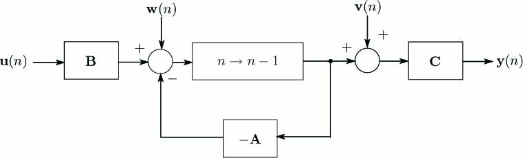
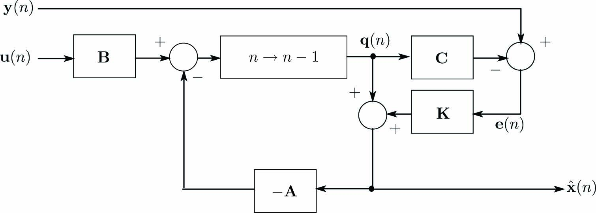

動的システムを次式の離散状態方程式(離散状態空間表現)で与えます。
\begin{align} \left. \begin{array}{@{\,}rl} \mathbf{x}(n+1)&=~\mathbf{A}\mathbf{x}(n)+\mathbf{B}\mathbf{u}(n)+\mathbf{w}(n)\\ \mathbf{y}(n)&=~\mathbf{C}\mathbf{x}(n)+\mathbf{v}(n) \end{array}\label{eq:RtnEqn} \right\} \end{align}ここに、\(\mathbf{u}\)は入力、\(\mathbf{x}\)は状態量、\(\mathbf{y}\)出力(計測値)、 \(\mathbf{A}\)は遷移行列、\(\mathbf{B}\)は入力係数、\(\mathbf{C}\)は出力係数、\(\mathbf{v}\)は出力ノイズ、 \(\mathbf{w}\)は入力ノイズです。\(\mathbf{A}\)、\(\mathbf{B}\)、\(\mathbf{C}\)は定数行列です。
式\eqref{eq:RtnEqn}をブロック線図で表現すると下図になります。
動的システムの状態量\(\mathbf{x}(n)\)は高次微分を含むため直接観測することができません。 そこで観測器により推定する必要があります。 式\eqref{eq:RtnEqn}の状態観測器(オブザーバー)は次式となります。
\begin{align} \left. \begin{array}{@{\,}rl} {\mathbf{q}}(n+1)&=~\mathbf{A}\hat{\mathbf{x}}(n)+\mathbf{B}\mathbf{u}(n)\\ \mathbf{e}(n)&=~\mathbf{y}(n)-\mathbf{C}\mathbf{q}(n)\\ \hat{\mathbf{x}}(n)&=~{\mathbf{q}}(n)+\mathbf{K}(n)\mathbf{e}(n) \end{array}\label{eq:KalmanFilt} \right\} \end{align}\(\hat{\mathbf{x}}\)は状態量\(\mathbf{x}\)の推定量、 \(\mathbf{q}\)は状態観測器の状態量であり、状態量\(\mathbf{x}\)の未来予測値となっています。 \(\mathbf{e}(n)\)は計測値\(\mathbf{y}(n)\)と状態観測器の出力\(\mathbf{C}\mathbf{q}(n)\)の偏差です。 偏差量\(\mathbf{e}(n)\)は行列\(\mathbf{K}(n)\)を補正係数として状態観推定量\(\hat{\mathbf{x}}(n)\)を補正します。
状態観測器\eqref{eq:KalmanFilt}をブロック線図で表現すると下図になります。 このブロック線図では制御入力\(\mathbf{u}(n)\)と計測で得られた\(\mathbf{y}(n)\)を入力とし、 状態推定値\(\hat{\mathbf{x}}(n)\)を出力としていることが分かります。
カルマンフィルターは状態推定誤差\((\mathbf{x}-\hat{\mathbf{x}})\)を最小化する状態観測器であり、 状態推定誤差を最小化するために行列\(\mathbf{K}(n)\)(カルマンゲイン)を次式で与えます。
\begin{align} \left. \begin{array}{@{\,}rl} \mathbf{K}(n)&=~\mathbf{X}(n)\mathbf{C}^T\mathbf{V}^{-1}\\ \mathbf{X}(n)&=~(\mathbf{I}-\mathbf{K}(n)(n)\mathbf{C})(\mathbf{A}\mathbf{X}(n-1)\mathbf{A}^T+\mathbf{W})\\ \mathbf{V}&=~E[\mathbf{v}(n)^T\mathbf{v}(n)]\\ \mathbf{W}&=~E[\mathbf{w}(n)^T\mathbf{w}(n)] \end{array}\label{eq:Mat_W} \right\} \end{align}\(\mathbf{V}\)、\(\mathbf{W}\)はそれぞれ\(\mathbf{v}(n)\)、\(\mathbf{w}(n)\)の共分散行列です。\(E[*]\)は算術平均であり、\(E[*]\)の中が\(\mathbf{x}(n)\)の場合、次式で与えられます。
\begin{align*} E[x(n)] = \frac{1}{n}\sum_{k = 0}^{n}x(k) \end{align*}ここでは、行列\(\mathbf{V}\)、\(\mathbf{W}\)が定数行列となる定常状態について導出します。 まず、状態量\(\hat{x}\)の状態推定誤差\(\tilde{\mathbf{x}}(n)\)を次式で与えます。
\begin{align} \tilde{\mathbf{x}}(n)=\mathbf{x}(n)-\hat{\mathbf{x}}(n) \end{align}評価量\(J(n)\)を状態推定誤差\(\tilde{\mathbf{x}}(n)\)の二次評価式(分散)として与えます。
\begin{align} J(n) = E[\tilde{\mathbf{x}}(n)^T\tilde{\mathbf{x}}(n)] = \frac{1}{n}\sum_{k = 0}^{n}\tilde{\mathbf{x}}(k)^T\tilde{\mathbf{x}}(k) \label{eq:Evalation} \end{align}式\eqref{eq:RtnEqn}の状態量\(\mathbf{x}(n)\)と状態観測器\eqref{eq:KalmanFilt}の状態量\(\mathbf{X}(n)\)の誤差を\(\mathbf{z}(n) = \mathbf{x}(n) - \mathbf{q}(n)\)と定義すると、 次式が得られます。
\begin{align} \mathbf{z}(n+1)=\mathbf{x}(n+1)-\mathbf{q}(n+1)=\mathbf{A}\tilde{\mathbf{x}}(n)+\mathbf{w}(n) \label{eq:StateEqZ} \end{align}状態推定ベクトル\(\hat{\mathbf{x}}(n)\)の誤差ベクトルを次式で与えます。
\begin{align} \tilde{\mathbf{x}}(n)&=~\mathbf{x}(n)-\hat{\mathbf{x}}(n)\nonumber\\ &=~\mathbf{x}(n)-\mathbf{q}(n)-\mathbf{K}(n)\{\mathbf{C}\hat{\mathbf{x}}(n)+\hat{\mathbf{v}}(n)-\hat{\mathbf{C}}\mathbf{q}(n)\}\nonumber\\ &=~(\mathbf{I}-\mathbf{K}(n)\mathbf{C})\mathbf{z}(n)-\mathbf{K}(n)\mathbf{v}(n)\label{eq:ErrorOfEst} \end{align}式\eqref{eq:ErrorOfEst}を式\eqref{eq:Evalation}に代入し、\(E[\tilde{\mathbf{z}}(n)\tilde{\mathbf{v}}^T(n)] = 0\)を考慮すると、評価量\(J\)は次式となります。
\begin{align} J(n)&=~E[{\mathbf{z}(n)^T(\mathbf{I}-\mathbf{K}(n)\mathbf{C})^T(\mathbf{I}-\mathbf{K}(n)\mathbf{C})\mathbf{z}(n)}]+E[\mathbf{v}(n)^T\mathbf{K}(n)^T\mathbf{K}(n)\mathbf{v}(n)]\nonumber\\ &=~E[\mathbf{z}(n)^T\mathbf{z}(n)]-E[{\mathbf{z}(n)^T\mathbf{K}(n)\mathbf{C}\mathbf{z}(n)}]-E[{\mathbf{z}(n)^T\mathbf{C}^T\mathbf{K}(n)^T\mathbf{z}(n)}]+E[{\mathbf{z}(n)^T\mathbf{C}^T\mathbf{K}(n)^T\mathbf{K}(n)\mathbf{C}\mathbf{z}(n)}] +E[\mathbf{v}(n)^T\mathbf{K}(n)^T\mathbf{K}(n)\mathbf{v}(n)] \end{align}最小二乗法と同様に状態推定誤差\(\tilde{\mathbf{x}}\)を 最小化するための\(\mathbf{K}(n)\)に対する評価量\(J\)の極値条件(\(\partial J/\partial\mathbf{K}(n)=\mathbf{O}\))は次式となります。
\begin{align} \frac{\partial J(n)}{\partial\mathbf{K}(n)}=-2E[{\mathbf{z}(n)^T\mathbf{z}(n)]\mathbf{C}}-2\mathbf{K}(n)\mathbf{C}E[{\mathbf{z}(n)^T\mathbf{z}(n)}]\mathbf{C}+2\mathbf{K}(n)E[\mathbf{v}(n)^T\mathbf{v}(n)]=\mathbf{O} \label{eq:Cond1} \end{align}ここで、\(\tilde{\mathbf{x}}(n)\)と\(\mathbf{z}(n)\)の共分散行列を次式で与えます。
\begin{align} \mathbf{X}(n)&=E[\tilde{\mathbf{x}}(n)\tilde{\mathbf{x}}(n)^T] \label{eq:MatP}\\ \mathbf{Z}(n)&=E[\mathbf{z}(n)\mathbf{z}(n)^T] \label{eq:Mat_M} \end{align}式\eqref{eq:MatP}、\eqref{eq:Mat_M}を用いると、式\eqref{eq:Cond1}は次式になります。
\begin{align} \frac{\partial J(n)}{\partial\mathbf{K}(n)}=-2\mathbf{Z}(n)\mathbf{C}^T-2\mathbf{K}(n)\mathbf{C}\mathbf{Z}(n)\mathbf{C}^T+2\mathbf{K}(n)\mathbf{V}=\mathbf{O} \end{align}したがって、\(\mathbf{K}(n)\)に対する評価量\(J\)の極値条件は次式となります。
\begin{align} (\mathbf{I} - \mathbf{K}(n)\mathbf{C})\mathbf{Z}(n)\mathbf{C}^T = \mathbf{K}(n)\mathbf{V} \label{eq:KalmanGain1} \end{align}十分大きな\(n\)に対して相関行列\(E[\tilde{\mathbf{x}}(n)\tilde{\mathbf{w}}^T(n)]=0\)を考慮すると式\eqref{eq:StateEqZ}から次式が得られます。
\begin{align} E[\mathbf{z}(n+1)\mathbf{z}^T(n+1)]&=~E[\{\mathbf{A}\tilde{\mathbf{x}}(n)+\mathbf{w}(n)\}\{\mathbf{A}\tilde{\mathbf{x}}(n)+\mathbf{w}(n)^T]\nonumber\\ &=~\mathbf{A}E[\tilde{\mathbf{x}}(n)\tilde{\mathbf{x}}(n)^T]\mathbf{A}^T+E[\mathbf{w}(n)\mathbf{w}(n)^T\}]\label{eq:VarMatOfZ} \end{align}\(E[\mathbf{z}(n+1)\mathbf{z}^T(n+1)]=\mathbf{Z}(n+1)\)を考慮すると、 式\eqref{eq:Mat_W}、\eqref{eq:MatP}により式\eqref{eq:VarMatOfZ}は次式となります。
\begin{align} \mathbf{Z}(n+1)=\mathbf{A}\mathbf{X}(n)\mathbf{A}^T+\mathbf{W} \label{eq:VarMatOfZ2} \end{align}式\eqref{eq:ErrorOfEst}を式\eqref{eq:MatP}に代入すると次式が得られます。
\begin{align} \mathbf{X}(n)=&E[\{(\mathbf{I}-\mathbf{K}(n)\mathbf{C})\mathbf{z}(n)-\mathbf{K}(n)\mathbf{v}(n)\}\{(\mathbf{I}-\mathbf{K}(n)\mathbf{C})\mathbf{z}(n)-\mathbf{K}(n)\mathbf{v}(n)\}^T] \nonumber\\ =&E[\{(\mathbf{I}-\mathbf{K}(n)\mathbf{C})\mathbf{z}(n)-\mathbf{K}(n)\mathbf{v}(n)\}\{\mathbf{z}(n)^T(\mathbf{I}-\mathbf{K}(n)\mathbf{C})^T-\mathbf{v}(n)^T\mathbf{K}(n)^T\}] \nonumber\\ =&E[\{(\mathbf{I}-\mathbf{K}(n)\mathbf{C})\mathbf{z}(n)\mathbf{z}(n)^T(\mathbf{I}-\mathbf{K}(n)\mathbf{C})^T-(\mathbf{I}-\mathbf{K}(n)\mathbf{C})\mathbf{z}(n)\mathbf{v}(n)^T\mathbf{K}(n)^T-\mathbf{K}(n)\mathbf{v}(n)\mathbf{z}(n)^T(\mathbf{I}-\mathbf{K}(n)\mathbf{C})^T+\mathbf{K}(n)\mathbf{v}(n)\mathbf{v}(n)^T\mathbf{K}(n)^T\}] \nonumber\\ =&\{(\mathbf{I}-\mathbf{K}(n)\mathbf{C})E[\mathbf{z}(n)\mathbf{z}(n)^T](\mathbf{I}-\mathbf{K}(n)\mathbf{C})^T-(\mathbf{I}-\mathbf{K}(n)\mathbf{C})E[\mathbf{z}(n)\mathbf{v}(n)^T]\mathbf{K}(n)^T-\mathbf{K}(n)E[\mathbf{v}(n)\mathbf{z}(n)^T](\mathbf{I}-\mathbf{K}(n)\mathbf{C})^T\nonumber\\ &+\mathbf{K}(n)E[\mathbf{v}(n)\mathbf{v}(n)^T]\mathbf{K}(n)^T\}] \label{eq:CovarMatOfError2} \end{align}十分大きな\(n\)に対して\(E[\mathbf{z}(n)\mathbf{v}^T(n)]=\mathbf{O}\)を考慮すると式\eqref{eq:CovarMatOfError2}は次式になります。
\begin{align} \mathbf{X}(n)=(\mathbf{I}-\mathbf{K}(n)\mathbf{C})\mathbf{Z}(n)(\mathbf{I}-\mathbf{K}(n)\mathbf{C})^T+\mathbf{K}(n)\mathbf{V}\mathbf{K}(n)^T \label{eq:MatP1} \end{align}式\eqref{eq:KalmanGain1}の両辺に右側から\(\mathbf{K}(n)^T\)を乗ずることにより次式が得られます。
\begin{align} \mathbf{K}(n)\mathbf{V}\mathbf{K}(n)^T=(\mathbf{I}-\mathbf{K}(n)\mathbf{C})\mathbf{Z}(n)\mathbf{C}^T\mathbf{K}(n)^T \label{eq:KVK} \end{align}式\eqref{eq:MatP1}の\(\mathbf{KVK^T}\)を\eqref{eq:KVK}の右辺で置き換えると\(\mathbf{X}(n)\)は次式となります。
\begin{align} \mathbf{X}(n)=(\mathbf{I}-\mathbf{K}(n)\mathbf{C})\mathbf{Z}(n)\label{eq:MatP2} \end{align}さらに式\eqref{eq:VarMatOfZ2}、\eqref{eq:MatP2}から\(\mathbf{X}(n)\)の漸化式が得られます。
\begin{align} \mathbf{X}(n)=(\mathbf{I}-\mathbf{K}(n)\mathbf{C})(\mathbf{A}\mathbf{X}(n-1)\mathbf{A}^T+\mathbf{W}) \label{eq:MatP3} \end{align}式\eqref{eq:MatP2}の両辺に右側から\(\mathbf{C}^T\)を乗じ、式\eqref{eq:KalmanGain1}より\((\mathbf{I}-\mathbf{KC})\mathbf{Z}(n)\mathbf{C}^T=\mathbf{KV}\)を考慮すれば 次式が得られます。
\begin{align} \mathbf{K}(n)\mathbf{V}=\mathbf{X}(n)\mathbf{C}^T \label{eq:KV} \end{align}すなわち、カルマンゲインは次式となります。
\begin{align*} \mathbf{K}(n)&=\mathbf{X}(n)\mathbf{C}^T\mathbf{V}^{-1} \end{align*}